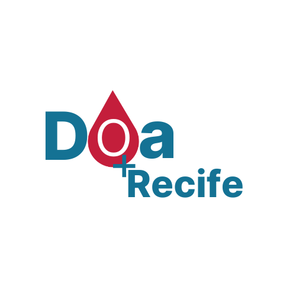

Receptores
Agendamento
Níveis
Receptores
Filtrar
Nome: Mariana Barbosa de Lima
Tipo Sanguíneo: B
Nome: Ana Maria Lima
Tipo Sanguíneo: O
Nome: Ricardo Braga de Fonseca
Tipo Sanguíneo: A
Agendamento
Gamificação de Doações de Sangue
Faça doações e suba de nível!
Nível: 1
Fazer Doação